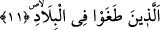
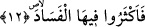
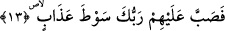

11. Ki onların hepsi ülkelerinde azgınlık ettiler.
Yukarıda zikredilen üç zümrenin (Âd, Semûd ve Firavun) sıfatıdır. Zemahşerî’ye
göre bu cümlenin kınama anlamı ifâde ettiği açıktır. Çünkü burası zem/kınama
makâmıdır. Mânâ itibariyle bu daha güzeldir.
Mânâ ise şöyledir: Bu zümrelerden her biri kendi ülkelerinde haddi aştılar, azgınlık
ettiler. Yâni Âd kavmi Yemen’de, Semûd kavmi Şam topraklarında, Kıbtîler Mısır’da
haddi aşıp azgınlık ettiler. Nitekim Nemrud da Sevad/Irak topraklarında haddi aşmıştır.
Diğerlerini de bunlara kıyas et.
12. Oralarda kötülüğü çoğalttılar.
Yani onlar inkâra ve diğer günahlarla oralarda kötülüğü çoğalttılar. Çünkü
“fesad/kötülük” bütün günah çeşitlerini içerir. Tıpkı “salâh” bütün iyilikleri içine aldığı
gibi. Her kim Allah’ın emrinden başkasını yaparsa, Allah’ın kullarını zulumle yönetirse
bu kimse müfsiddir, Allah’ın kendisi için koyduğu sınırı aşandır. Bu âyette zamanımızın
yöneticilerinin ve benzerlerinin çoğu için büyük bir korkutma vardır.
13. Bu yüzden Rabbin onların üstüne azap kamçısı yağdırdı.
“Sabbü’l-mâ’” suyu yukardan dökmek/akıtmak demektir. Yâni Allah Teâlâ bu
zümrelerden her biri üzerine yaptıkları azgınlık ve fesadın ardından çok şiddetli bir
azap kamçısı indirdi.
“Sevt” birbirine kıvrılarak sarılmış deriden yapılmış ve dövmeye yarayan bir
âlet/kamçı demektir.
Rabbin onların üzerine miktarı ve ne derece olduğu kavranılamayacak kadar şiddetli
bir azap indirdi. Buna göre “azap kamçısı” ile kasdedilen onlardan her bir zümrenin
başına gelen ve diğer sûrelerde açıklanan azap çeşitleridir. Âd kavmine şiddetli bir
rüzgar, Semûd kavmine korkunç ses, Kıptîlere suda boğulma azabı verilmişti. Bu azaba
“kamçı” adı verilmesi bunların o kâfirlere âhirette hazırlanan azaba göre kılıcın yanında
kamçı mesâbesinde olduğuna işârettir.